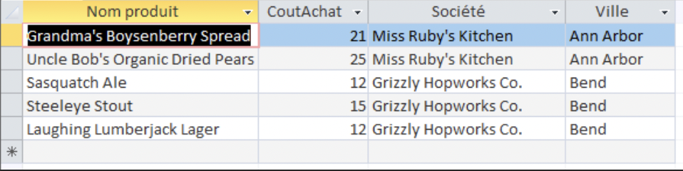

Indicateur 1 : Produits US à moins de 25€
Énoncé et interprétation
La demande (question c) est : "Quels sont les produits de provenance des Etats-Unis ayant un cout de moins de 25€ ? On veut les connaître noms et prix, nom du fournisseur et ville.".
Nous avons interprété "coût" comme le prix d'achat (`PrixAchat` dans la table `Produit`) et "provenance" comme le `Pays` du `Fournisseur`.
Requête SQL correspondante
Voici le code SQL que nous avons utilisé pour cette question
SELECT
Produit.NomProd,
Produit.CoutAchat,
Fournisseur.Societe,
Fournisseur.Ville
FROM
Fournisseur
INNER JOIN Produit ON Fournisseur.NoFour = Produit.NoFour
WHERE
Fournisseur.Pays = "Etats-Unis"
AND Produit.CoutAchat <= 25;
Résultat
Voici une capture d'écran du résultat obtenu dans Access :
